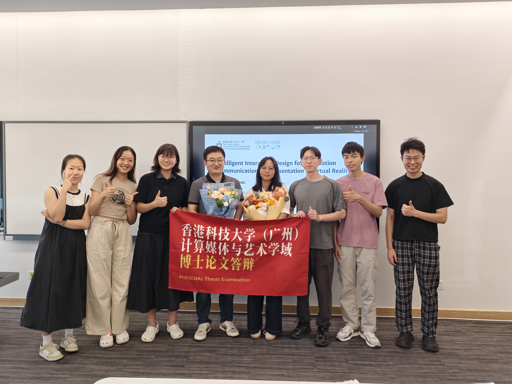
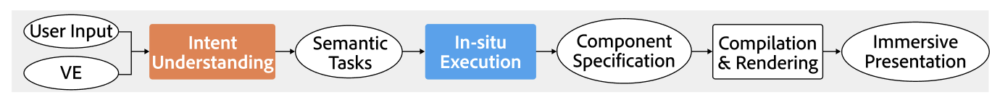
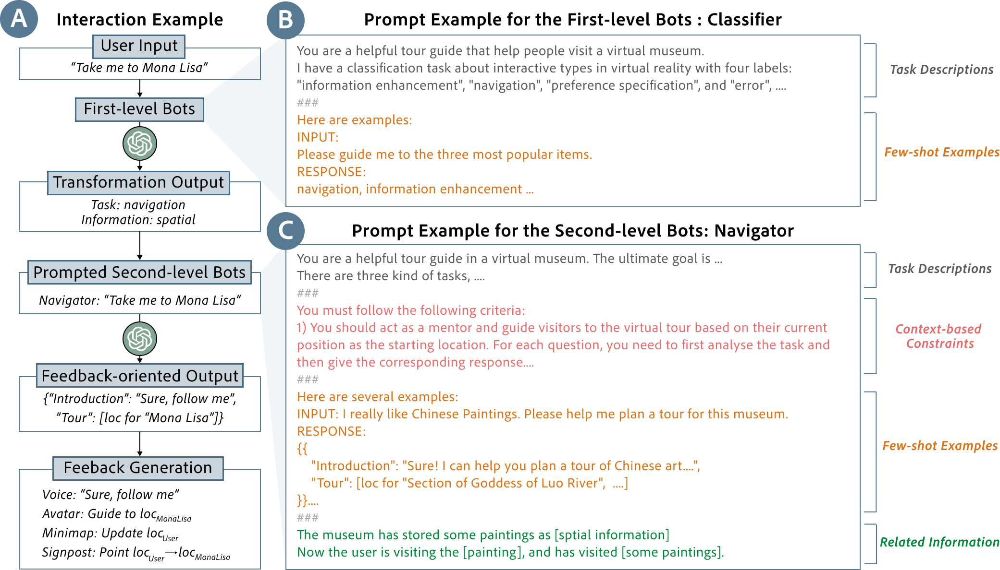
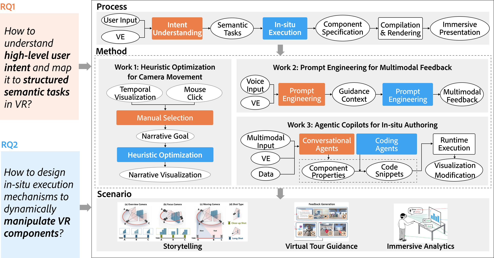
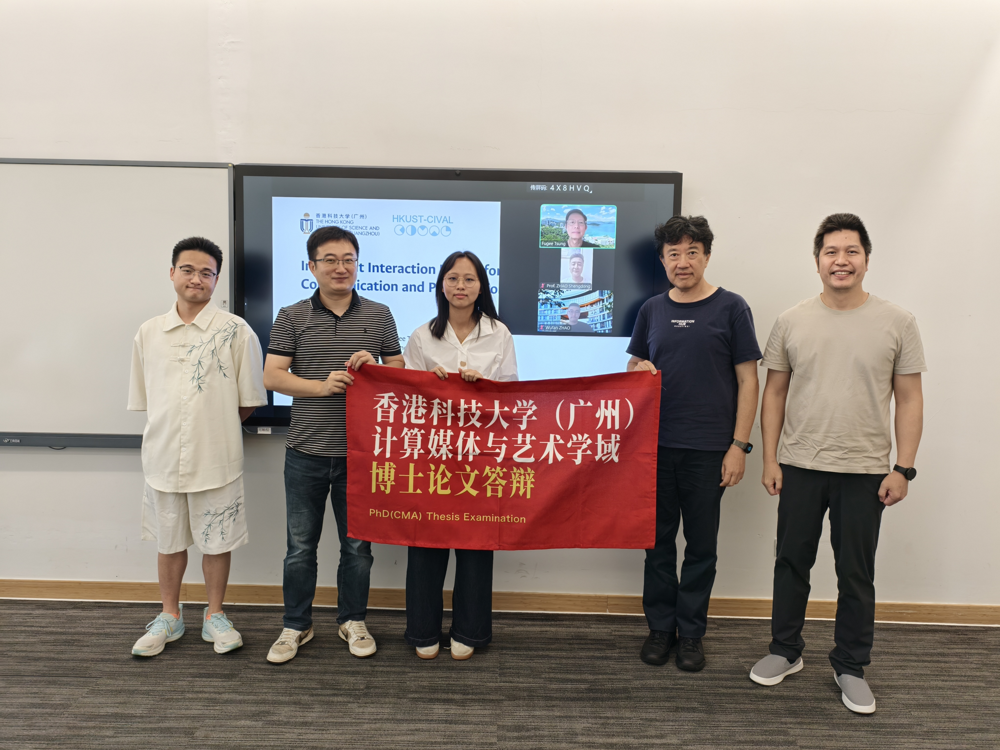

2026年7月30日，香港科技大学（广州）计算媒体与艺术学域（CMA）博士生王湛顺利通过博士毕业答辩，取得博士学位。王湛同学的博士毕业论文题为《Intelligent Interaction Design for Information Presentation and Communication in Virtual Reality》（虚拟现实中信息呈现与传播的智能交互设计），由Prof. Wei Zeng与Prof. Fu-Gee Tsung联合指导。
虚拟现实（VR）作为一种沉浸式技术，为信息呈现与传播提供了全新的媒介——无限的显示空间、沉浸式的临场感和自然的交互方式使其在教育、工业、建筑和娱乐等领域展现出巨大潜力。然而，如何在三维空间中实现智能交互以有效呈现和传播信息，仍面临两大核心挑战：其一，意图理解——VR中的语音、手势、注视等多模态输入具有模糊性和上下文依赖性，如何准确捕获用户高层个性化意图并解码为特定场景的语义任务；其二，原位执行——如何将抽象的语义任务转化为可执行的组件规格，满足高精度的性能要求。这两个挑战构成了王湛博士论文的核心研究问题。

为系统性地解决上述问题，王湛同学的博士论文提出了三项核心工作，分别针对不同应用场景探索智能交互设计：(1) CineFolio（Visual Informatics 2025）——提出基于电影摄影原理的半自动化相机规划方法，通过约束满足问题进行视点选择和路径规划，支持概览、聚焦、运动等多种相机类型，帮助新手用户在沉浸式叙事可视化中创建富有表现力的相机运动。用户研究表明，概览相机在理解准确性上优于聚焦相机，而用户普遍期望在叙事引导与自由探索之间取得平衡；(2) VirtuWander（ACM CHI 2024）——面向虚拟博物馆导览场景，利用大语言模型构建多模态反馈系统。通过两阶段框架（上下文识别与反馈生成），将用户的自然语言意图转化为语音、虚拟化身、文本窗口、高亮标注等多模态组合反馈，支持主题导览、单件探索和个性化定制等多种导览任务；(3) Vituo（IEEE TVCG 审稿中）——提出基于对话式大语言模型Copilot的沉浸式可视化原位创作框架，将用户的语音、手势和注视等多模态意图映射为数据、可视化和环境三个维度的上下文空间，通过意图映射、原子操作和运行时执行三个阶段，实现从高层意图到可执行代码的端到端翻译。用户评估显示，传统手动编辑需要7-23分钟的任务，Vituo仅需约10秒即可完成。


王湛同学的博士论文系统性地探索了智能交互技术如何弥合用户意图与沉浸式信息呈现之间的鸿沟。从计算优化（CineFolio）到生成式模型（VirtuWander）再到智能体框架（Vituo），三项工作逐步深化了对"意图理解"和"原位执行"两大核心问题的回答，为VR环境下的信息呈现与传播提供了从理论框架到技术实现的完整方案。论文还展望了未来研究方向，包括渐进式学习驱动的动态交互设计、可泛化的智能支架架构，以及多用户跨设备协作场景的支持。

祝贺王湛同学顺利完成博士学业！🎉 王湛同学是港科广CIVAL课题组的第三位博士毕业生，在读期间在虚拟现实智能交互设计方向做出了创新贡献，在CHI、Visual Informatics等会议与期刊发表多篇论文，展现了出色的跨学科研究能力。衷心感谢各位答辩委员在百忙之中参加本次答辩，并提出了宝贵的意见与建议！祝王湛同学未来一切顺利，前程似锦！🎓